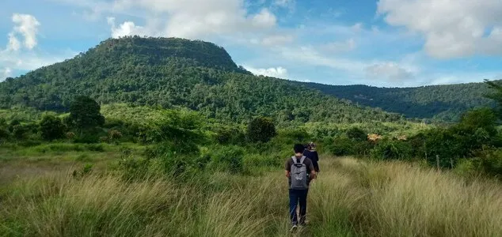

Cambodia · Forest first
Rewilding land in Cambodia.
We bought almost 100 hectares of land in Cambodia. Much of it is being left to recover naturally. On areas cleared decades ago, we want to trial native tree planting and share what we learn. Over time, we hope to build a village where people can live and work closer to nature.
The land today Today

- Land we own
- Almost 100 hectares
- Cleared 20–30 years ago
- Around 30–40 hectares
- Most of the land
- Left undisturbed to recover
- Where
- Cambodia · Open the map ↗
Our approach
Natural recovery Today
Some areas are already recovering. What we saw on the land in 2020 and 2021 convinced us to leave those areas undisturbed and let them keep going.
Native planting trial Planned trial
On selected cleared patches, we want to try Miyawaki-style planting with diverse native species. We’ll start small, understand the care involved, and learn what survives before expanding.
What we want to learn Planned trial
Cost
What a small, dense native planting really costs, including the work after planting day.
Care
How much watering, weeding and replacing it takes, and for how long.
Survival
Which species make it through the first dry season, and which don’t.
Changes in the land
Shade, soil, birds and insects, recorded the same way each time so we can compare.
The village Long-term vision
One day, we want VitaminAir to become a place where people can live, work, grow food and care for the surrounding forest. We are still exploring what that village should look like. The forest recovery comes first.
Journal
- The Little Lizard and the Brave Traveler (page not built in prototype)Story2 Sep 2024
- VitaminAir and Carbon CreditsArchive28 Aug 2024
- Reconnecting With Nature: Finding Inspiration (page not built in prototype)Reflection13 Aug 2024
- Sacred Forest Journey of Discovery (page not built in prototype)Story6 Aug 2024
- The Dawn of Red Moon ValleyStory4 Aug 2024
Get in touch
Interested in the planting trial, research or the village idea? Get in touch.
info@vitaminair.org · Visits by arrangement.